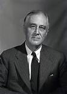

|  | VITA👦🏾Persona con un carisma eccezionale atteento alle sue esigenze rispetto a qulle degli altri |
Il signor Franklyn Chiemeka Ekoh, meglio consciuto come Franklin, nasce il 03/06/2004 a Enugu in nigeria da una famiglia molto umile.
all'età di 5 anni diparte insieme alla sorella maggiore e la madre per l'Italia, luogo in cui si trova il padre e dove trascorre gran
parte della sua infanzia e adolescenza.
Questi sono anni molto difficili per lui, poiché costretto a seguire regole non gradite, impostegli dai suoi "genitori"
| essere capace di giocare a calcio | ⭐⭐⭐⭐ |
| nozioni di storia e di geografia | ⭐⭐⭐⭐ |
| nozioni di piano | ⭐ |
| Anno | le fantastiche imprese compiute nella sua vita |
|---|---|
| 2025 | diventa membro di uno dei 1000000 |
| 2028 | diventa membro di uno dei 100000 |
| 2035 | acquisisce il soprannome "il peggiore della sua generazione" |
| 2060 | mostro al mondo intero la sua influenza sulla delle persone che lo compongono |